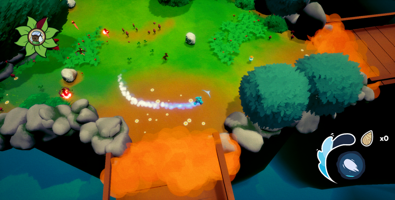

Descripción
Este es un juego de acción-aventura donde el jugador controla a un Goteao llamado Splash que acompaña a un Fertilizao llamado Splinter. Durante su travesía, habrá una tribu de Fogosos que tratará de acabar con Splinter y el deber del jugador será protegerlo. El jugador avanzará por niveles compuestos por varias salas interconectadas que combinan secciones de exploración con diálogos y secciones de combate.
El jugador podrá eliminar a los enemigos chocando de forma directa con ellos. Además, en el juego se utiliza un sistema de físicas que utiliza la velocidad para definir el daño que el jugador causa a los enemigos.
Al comienzo del juego el pueblo de nuestros protagonistas es destruido por un grupo de fogosos, el maestro de Splash, Stick, es derrotado y Splash se ve obligado a huir con Splinter. Durante su camino hacia un lugar seguro descubrirán lo sucedido en el resto de los pueblos y conocerán a gente que los ayudará por el camino.


